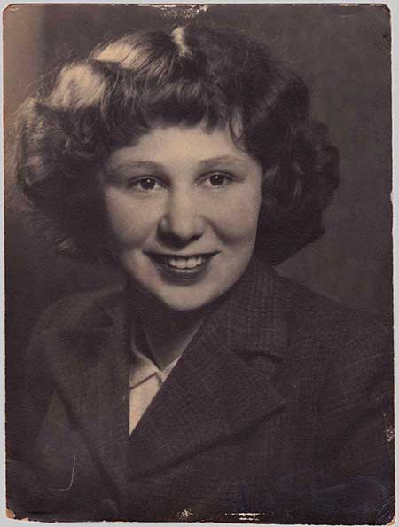

|
|


An Imaginary Mother : Bron Nichols

{kind=link}
Some days, if the wash hadn’t
been too grubby, Mum would scrape the hot ash from under the copper,
let the water cool down, then plonk me naked into the ‘pot’. Grinning
wickedly she would tell me I was being boiled until tender.
‘And then I will gobble you all up!’
‘And then I will gobble you all up!’
Bron was Phyllis Nicholls’ first child. An Imaginary Mother is an open-hearted memoir of her mother and their intense relationship over fifty-six years.
Phyllis was a secretive, complex and unpredictable woman. Before her marriage, Phyllis worked happily as a designer in Vida Turner’s pioneering textile company. After World War II, with a young family, she had to cope with the isolation of a struggling subsistence farm, the tumult of her husband’s conversion to a rigid religion, and her own increasing mood changes between despair, melancholy and joy.
Yet to the end of almost eighty years, Phyll was also a stoic. She saw her ‘madnesses’ as the inevitable ups and downs of a full life, to be worked around with a mixture of courage, stealth, ingenuity and, whenever possible, with humour. An Imaginary Mother is a portrait in which the sitter and the painter are both revealed.
{kind=link}

Her Death‘They’re showing that poor cow again.’
My mother called from the living-room. She was watching the midday news on TV.
‘Oh, this is cruel. The beast looks drunk, she’s lurching and skidding... now she’s down. Poor cow. I know exactly how she feels.’
I didn’t need to go and look, to know what Mum was talking about. For months, with every grim report on England’s recurring outbreaks of Mad Cow Disease, that big black-and-white cow had been lurching and skidding.
Phyllis was fond of cows, and fond of England—her father’s homeland—which she visited just once (in fact, not fantasy) in 1980. She loved old stone churches, rainy grey skies, and gentle-eyed cattle.
By 1999, Phyll was beginning to wobble somewhat, inclined to skid on the wet paths of her garden, but she certainly wasn’t in the same category as that poor cow. The family was unanimous (for once) in reassurance. It was natural to be slowing down a bit, in one’s seventy-ninth year, yes, and forgetting to turn off the taps, nothing odd at all.
But Phyll would not be cheered up. Some days, when she felt particularly unhappy, she insisted that there really was ‘something wrong’ with her brain. She could feel it, she said. Weird sensations, running about in all directions.
Such complaints were not new. Mum was very good at crying Wolf! (and very convincing, when I was a kid). She was also a stoic of the highest order when in real trouble.
Over the years, to avoid confusion, I worked out my own way of ascertaining Mum’s state of health: I watched her, as one might stealthily watch a timid Blue Wren, in her garden. Tangled hair, no hat, and a pair of muddy slippers: always a good sign. It meant that Phyll had just gone straight out there, stopping for nothing. She had her own bird-like way of hopping from place to place; she appeared and disappeared amongst her rhododendrons and tree-ferns, wattles and chrysanthemums. On a whim, it would seem, she would move a huge rock from one side of the path to the other side; patiently levering with the shovel; pausing to transplant a broken piece of geranium. The porridge pot might burn dry, the laundry tub might overflow, but Phyllis was well.
I helped my mother scour quite a lot of burnt pots and mop up a few floods, in that penultimate year of her life. ‘Don’t tell John!’ she would order me. ‘He already thinks I’m a dill. Phyll the dill.’ On other days, as Dad and I mopped the laundry, he would be the one insisting: ‘Don’t say anything to Phyllie!’
My own place, a rented cottage, was a fifteen-minute walk from their place. Halls Gap was a very small town; it doubled as a tourist resort and a retirement village on the edge of the Grampians Ranges. I had been there for four years—not for retirement but for some desperately needed peace of mind. Phyll and John had lived there for almost two decades in their oddly shaped, somewhat insubstantial house (it was built as a holiday house, originally), on a sloping block of bushland. Phyllis had patiently persuaded an English country garden to grow amongst the native grevilleas and wattles in stony sandy soil.
The summers were unremittingly hot; when the north wind blew, John packed ‘fire boxes’ into the car: photographs, letters, paintings. The memory things. In winter, the winds were cold, they howled up the valley between the ranges, they ripped great trees out of the ground. My mother loved these wild seasonal changes. She would complain about them, but secretly she was both elated and consoled by Nature’s temperamental extremes.
I usually visited Phyll at the end of my day’s work; the path would be darkening under the trees, the windows of her house warm with light, as I approached. No car in the yard. Dad was away almost every day: being busy, helping somebody to do something. It was one of his obsessions.
Phyllis was often at her piano, that poor old piano which couldn’t stay in tune. I liked to peep in through the front window, for a few minutes, before singing out. I liked the faltering, fragile notes of Mum’s five-finger exercises, or of some old song, If I Were a Blackbird, or Danny Boy. For more then twenty years Mum had been exercising her fingers, to prevent arthritis, that’s all it was, she had no pretensions, she said, to being a pianist. Which was just as well. She had absolutely no sense of timing.
There was one afternoon, in the late winter of that year, when Mum seemed to sense me at the window behind her. I was smiling as I tried to guess what song she was playing. She suddenly folded the sheet music, closed the lid, and without turning around, called out: ‘Bring some wood in with you, Bron.’
Dad had left a stack, as always, on the verandah. I loaded my arms, and Mum opened the door for me, and rebuked me for walking out in such wild weather.
‘You’re a bad girl. A branch will fall on your head and kill you. Oh, I’m glad you popped in, I’ve been wanting to give you this book which I’ve just finished, I’ve done no work at all, I just had to devour it all in one sitting, now where did I put it...’
While she rummaged through the mass of books on her sofa, I went and put the kettle on. I poked my nose into the fridge, not only for something to eat but to see if anything should be thrown out: mouldy bread, mildewed cabbage. Mum had placed a slab of raw beef, inadequately wrapped in plastic, on the top shelf, and blood had seeped down through the layers, over the leftovers, and today’s custard, and all the way into the vegie box at the bottom. The lid on yesterday’s rice-pudding was tight, but the lidless custard was ruined.
I cleaned up, and made a pot of tea, and when I took the tray into the front room, my mother looked up from her book and smiled beautifully, as if I’d been gone only two minutes.
*
What do you say? Mum, your banana custard, it was so delicious I ate the lot. Mum, I’ve chucked the custard into the compost because you forgot to put a tray under the raw meat.
I nearly always spoke the facts. Bluntly. Distress made me tactless and sometimes cruel. By Christmas it was obvious that Phyll was in real trouble—she was wobbling, and weak at the knees, and she wasn’t making any more jokes about being a Mad Cow—yet I still didn’t believe that anything could kill her. Underneath all her gloom she was extraordinarily strong and stubborn. Whatever this malaise was, she would get through it, as always. Phyllis the stoic. Her most quoted line of poetry was from Rilke’s For Wolf Graf von Kalckreuth, ‘Who talks of victory? To endure is all.’
Winter, 2000, and Phyll’s legs were useless. In three months she had progressed from walking-stick to walking-frame to wheelchair. And her speech was oddly inconsistent: clear and concise for a few sentences and then a muddled outburst and then clear again. Phyll could hear this, herself, and insisted that she’d had a stroke. Her GP put her into hospital, for tests, to rule things out. It wasn’t Parkinson’s disease. It wasn’t cancer. It wasn’t a stroke.
‘I told you, Mum. You’re okay!’ I almost shouted at her as she lay curled up like a leaf in a bed in our local hospital. (Some respite for Dad and my sisters who had been nursing Mum at home.)
‘The pan,’ Mum whimpered.
‘You’ve just been on the pan.’ I went close to her and softened my voice. Phyll’s desire for dignity had not been diminished by the shocks of the past weeks: having her bum wiped by her middle-aged daughters; watching food slide from her spoon to her lap...
‘The nurse took the pan away just now, Mummy, and you hadn’t piddled a drop.’
‘I know.’ With great effort she rolled herself onto her back, so she could see me properly, and there was a sort of terror in her face. ‘But now I’m about to wet the bed. Get the pan, Bron, please, quickly.’
Two weeks later an ambulance took her to Melbourne for a lumbar puncture. My sister, Lydia, and my father went with her, and two days later, June 27, Lydia phoned the rest of us to say that the test had come up with something. Creutzfeldt-Jakob disease. The human version of ‘Mad Cow’.
On the phone to my other sister, Jane, I heard myself laughing and realised I sounded hysterical. My family’s readiness to believe the diagnosis, was as bizarre as the news itself. I plunged into medical books, I read things to turn your hair white. I faced the remote and mad possibility that, exactly twenty years earlier, in some rural English pub, Dad had ordered the chicken, and Mum, the Beef Stroganoff.
Whatever, my mother spent the last six weeks of her life in a state that surely resembled the plight of those poor cows. Her arms jerked and flailed on whims of their own; she dribbled and grunted and groaned and wept. Occasionally she steadied, and would stare at us, from soft brown eyes, quietly.
She died on July 22, and the family agreed to an autopsy. The CJD diagnosis was overturned. There was no sign in the brain of the typical spongiform tissue, just areas of shrinkage, as are found in Alzheimer’s disease. Alzheimer’s normally develops over years, rather than months. The final diagnosis: unexplained, sudden-onset dementia.
It was the sort of twist which Phyll, had she read about it, would have found hilarious.
For me, the bizarre aspects of my mother’s final illness amplified my inability to completely believe in her death.
I saw Mum’s body an hour or so after she had taken leave of it. The nurses had made everything neat and pretty in the tiny grey room. (A Room of Her Own—which Phyll had always wanted—for the last six weeks of her life.) They had combed her hair severely back from her high sloping forehead. With her pale and strangely smooth skin she looked like a sculptured effigy, a figure designed for a tomb slab.
It was odd to see Phyll’s body face-up. For the past two months she had been curled up on one side or the other (the nurses carefully turned her, on the hour), and for the past thirty years she had carried what seemed like a great weight on her shoulders: the hump of her own spine. This hump, this carrybag of troubles, was often the only visible part of Mum when she was huddled under the blankets.
And now here she was—or wasn’t. All tidied up and somehow smoothed out, and appearing both terribly small and hugely, regally disdainful.
More than once throughout our shared years I had promised Mum that I would not allow her to be buried alive, so for a full minute I stared at the perfectly still spot where yesterday a pulse had been trembling fitfully just above the neckline of her pink flannelette nightie. As I leaned over her to kiss that extraordinary forehead, a tiny gleam of white, under one eyelid, looked back at me, stared unwaveringly into my own benumbed face. I heard myself thinking: Good one, Mum. Playing dead. Good trick. Bravo.
*
I waited for the reality of my mother’s death to do whatever it had to do: fall on me, sneak up on me, whatever.
The remaining family members fell into bitter argument over funeral rites. Phyll had left no instructions of any sort, not even a personal will. We all claimed to know what she would have wanted, but Father had his way and orchestrated (there’s no better word for it) a memorial service in the Halls Gap house. He sent invitations to a long list of people from his quite varied past—which included thirty years as a member of a fundamentalist church.
Phyll had had an interesting past of her own before throwing in her lot with John, leaving the city, and settling on the dry plains of northern Victoria. Between age seventeen and twenty-three she was a designer in Vida Turner’s textile studio, and thanks to the out-going Vida, Phyllie made friends amongst the people who were building Montsalvat, an artists’ colony, in Eltham. None of the folk from this era were able to come to Phyll’s funeral; they were dead or ill or long out-of-touch. This seemed sad, to me. And since I had no wish to meet up again with people from Dad’s days of religious zealotry, I didn’t attend his Funeral Games.
Instead I began to record memories of my mother. Abandoning my current work of fiction, I wrote copiously, obsessively, about my relationship with Phyllie, our fifty-six years together, which began on the sixth of June, 1944.
That was my grieving and my solace over the next four years. On the eve of my sixtieth birthday I discovered that my haphazard recollections contained a story—a true-from-my-view story, with complex characters, a twisty subplot, and even a ghostly denouement.
So I pruned and rearranged, I selected one memory over another, not in order to fictionalise, but to highlight one particular aspect of a troubled, contradictory, passionate relationship.
I called my story ‘An Imaginary Mother’ because that’s how Phyll often appeared to me, when I was a child. She had a habit of ‘disappearing’—sometimes for hours in a day—whilst leaving a facsimile of herself in ordinary time and space. Where she went to, wasn’t my concern. My childish task was to invoke her presence, indeed to become her, when necessary, to keep all safe...
Back to top
Reviews
An Imaginary Mother - Readers Report
Valmai Simpson
I read this book eagerly from the outset, it sucked me in
immediately, and I greedily lapped up the pages. This story validates
for me any perceived or imagined weirdness that existed in my own family
life. We all want to come from a 'normal family' whatever
that is, but each family is normal to themselves as this book revealed
to me, and I now believe we are each meant to be in the particular
family unit we inhabit.
I found this book so refreshingly honest and frank, and Bron's
writing warmed me to her eccentric Mother, and indeed created for me a
new perspective and appreciation of my own Mother and family. There are
aspects we hate and aspects we love about our
own childhood, and many of us exaggerate the good, and hide the 'not so
good' but not so with Bron, she tells it how it is. This had quite a
cathartic effect on my own somewhat ambiguous childhood memories.
Love, however it is demonstrated, is the vital ingredient that
cements the relationships in a family, along with all the
inconsistencies. So I thank Bron for sharing her life and giving her
readers the opportunity to see into another 'normal' family's
life and dynamics, and to witness the brave stoicism she employs in the
telling of her story. Bron is a storyteller I will certainly read
again, as I loved the generosity she extended in An Imaginary Mother, of
the opportunity to know and appreciate her own
journey, her Mother, and in a briefer way each member of her family. I
loved them all.
A Heartrending Memoir
Georgina Scillio
Rochford Street Review, 10 May 2013
This heartrending memoir by Bron Nicholls of her ‘strange mother’ is well written and hard to put down.
Nicholls’ relationship with both her parents, especially her mother Phyll with whom, naturally, she spent more time, was very difficult. Often Nicholls was given contradictory messages and the more she tried to please her secretive and unpredictable mother, the more her mother frustrated her and belittled her efforts.
As a child Phyll and her younger sister Meg had been sent to Sutherland House, an orphanage for destitute children at Diamond Creek in Victoria. They were neither destitute nor orphans and never forgave their father for having sent them there. At the Home they were not ill-treated but their hair was cut short, they had very few possessions, the food was meagre and they were made to work hard housekeeping or in the farm.
Phyll retreated into books and became an avid reader for the rest of her life, often living out in her head the events of the books she read. It was an escape into an imaginary life which caused her to ‘block’ out many things, including her family.
One of the main flaws of the narration in An Imaginary Mother s that Nicholls calls her mother ‘Phill’ and at other times - sometimes in the same paragraph - she calls her ‘Mum’. Again, with her father, he is both ‘John’ and ‘Dad’ when just she or he would have been clear enough. At times, this proved confusing and one had to re-read the piece to find out who are the people mentioned.
There are also sections of the story where we are left wondering what happened next. For example, the horrendous bus trip with Nicholls and Nicholls’s very sick sister was described in great detail and is very moving. But as the author changes subject immediately, the reader is left high and dry and not knowing what was wrong with girl: did she recover? Later on in the story, the girl reappears, so we can assume she did not die from whatever sickness she had been suffering.
In another instance, the author and her mother are sitting on the verandah, waiting for the father to arrive as he was late from work. The reader becomes anxious and worries: did Dad have an accident? Did he arrive home safely for dinner? But instead of answering these questions for us, Nicholls talks about her beloved dog, Jelly Roll, who is now old and who has to be put down by the vet. We get the impression that there is more affection for her dog, than for her father.
What was also sad about the author’s childhood is the way her Christian fundamentalist father’s rigid beliefs blighted his family’s lives and especially that of the author. When Nicholls tried to escape, she ended up in more trouble. She states very briefly (one sentence) that she got married to the violent young man with whom she had fled. We are not told why and how she decided to make such a seriously bad move and we are left rather puzzled: if she knew he was so unpleasant, why did she marry him? Was her desperation that great?
The marriage did not last long and she continued moving from place to place - she moved house more than 40 times - at times leaving jobs and friends behind her. She admits to be following the example of her parents, especially her father, whose restlessness made him continually change jobs, suburbs and States.
There are some bad luck stories, but Nicholls does not indulge in self-pity, on the contrary, she blames herself for when things go wrong. The way she cared for her ill mother in the last years of her life is very touching, even though her efforts were not always appreciated.
In spite of some shortcomings, this is a very worthwhile book to read, if not for anything else to learn about the consequences of mental illness on other members of a family. It is also a very interesting story about the struggles, both financial and social, of many Australian families in the early and middle part of the twentieth century.
The book has several photos of the mother, the author and her family and is an excellent way to engage the reader. The front cover, a photo of the mother, with the author as a baby in a washing tub in the garden, is rather delightful.
Nicholls’ relationship with both her parents, especially her mother Phyll with whom, naturally, she spent more time, was very difficult. Often Nicholls was given contradictory messages and the more she tried to please her secretive and unpredictable mother, the more her mother frustrated her and belittled her efforts.
As a child Phyll and her younger sister Meg had been sent to Sutherland House, an orphanage for destitute children at Diamond Creek in Victoria. They were neither destitute nor orphans and never forgave their father for having sent them there. At the Home they were not ill-treated but their hair was cut short, they had very few possessions, the food was meagre and they were made to work hard housekeeping or in the farm.
Phyll retreated into books and became an avid reader for the rest of her life, often living out in her head the events of the books she read. It was an escape into an imaginary life which caused her to ‘block’ out many things, including her family.
One of the main flaws of the narration in An Imaginary Mother s that Nicholls calls her mother ‘Phill’ and at other times - sometimes in the same paragraph - she calls her ‘Mum’. Again, with her father, he is both ‘John’ and ‘Dad’ when just she or he would have been clear enough. At times, this proved confusing and one had to re-read the piece to find out who are the people mentioned.
There are also sections of the story where we are left wondering what happened next. For example, the horrendous bus trip with Nicholls and Nicholls’s very sick sister was described in great detail and is very moving. But as the author changes subject immediately, the reader is left high and dry and not knowing what was wrong with girl: did she recover? Later on in the story, the girl reappears, so we can assume she did not die from whatever sickness she had been suffering.
In another instance, the author and her mother are sitting on the verandah, waiting for the father to arrive as he was late from work. The reader becomes anxious and worries: did Dad have an accident? Did he arrive home safely for dinner? But instead of answering these questions for us, Nicholls talks about her beloved dog, Jelly Roll, who is now old and who has to be put down by the vet. We get the impression that there is more affection for her dog, than for her father.
What was also sad about the author’s childhood is the way her Christian fundamentalist father’s rigid beliefs blighted his family’s lives and especially that of the author. When Nicholls tried to escape, she ended up in more trouble. She states very briefly (one sentence) that she got married to the violent young man with whom she had fled. We are not told why and how she decided to make such a seriously bad move and we are left rather puzzled: if she knew he was so unpleasant, why did she marry him? Was her desperation that great?
The marriage did not last long and she continued moving from place to place - she moved house more than 40 times - at times leaving jobs and friends behind her. She admits to be following the example of her parents, especially her father, whose restlessness made him continually change jobs, suburbs and States.
There are some bad luck stories, but Nicholls does not indulge in self-pity, on the contrary, she blames herself for when things go wrong. The way she cared for her ill mother in the last years of her life is very touching, even though her efforts were not always appreciated.
In spite of some shortcomings, this is a very worthwhile book to read, if not for anything else to learn about the consequences of mental illness on other members of a family. It is also a very interesting story about the struggles, both financial and social, of many Australian families in the early and middle part of the twentieth century.
The book has several photos of the mother, the author and her family and is an excellent way to engage the reader. The front cover, a photo of the mother, with the author as a baby in a washing tub in the garden, is rather delightful.
An Imaginary Mother
Fiona Capp
The Age, 23 February 2013
Bron Nicholls called this poignant gem of a memoir An Imaginary Mother
because of her mother’s habit, when Nicholls was a child, of mentally
‘disappearing’ and leaving a ‘fake’ mother in her place. Through a
series of discontinuous reflections, Nicholls probes the reasons behind
the mental peculiarities of her mother, Phyllis, and pays tribute to
her troubled spirit. Phyllis was left in an orphanage by her father
when she was 11 because he wanted to get her away from the influence of
his wife, whom he considered mad. The pain of abandonment and the
experience of growing up in an institution left Phyllis haunted for
life. ‘I’m glad nobody can see into my head,’ she would say to her
daughter. Nicholls’ tale is framed by her mother’s diagnosis and death
from what was thought to be mad cow’s disease. Despite Phyllis’ grim
end and mental quirks, Nicholls draws a loving portrait of an intense,
unconventional woman who struggled to contain her ‘overworked
imagination’.
Agonising ruptures in the maternal world
Joanne Fedler
The Australian, 16 March 2013
Agonising ruptures in the maternal world
Joanne Fedler
The Australian, 16 March 2013
An Imaginary Mother
is Melbourne author Bron Nicholls’s attempt to understand her complex
and elusive mother and how their relationship shaped who she is.
Nicholls, the rescuer in her family, is left bereft and relieved by her mother’s death at 80, and it’s this paradox that lies at the heart of the narrative.
We are drawn into Nicholls’s unpredictable world at various times: she describes overhearing her parents fighting at night and not recognising her mother’s voice; and later when her mother leaves without saying goodbye: ‘I wanted to cry out... for godssake be NORMAL. Come back and say an ordinary goodbye, like an ordinary mother!’ But Nicholls leaves it at that, perhaps just like her mother did, with a slight feeling of being let down.
This is a short book replete with letter excerpts and photographs from a family scrapbook in which large tracts of time are quickly summed up and emotional turning points glossed over. These moments cry out to be more fully excavated. Only towards the end of the book do we feel the full impact of Nicholls’s pain when she writes: ‘You nullified me... if I said I was feeling happy you said that I looked sad. If I said I felt well, you told me I looked sick, and when I said I was sick, you insisted that I was pretending.’
Many readers will recognise this dislocation and sense of alienation from our mothers, and this book is a heartfelt effort at evoking this filial ambivalence. It isn’t easy to write about our parents, especially one who gave and took in one gesture, one who was never really there. Nicholls writes: ‘I’m remembering the secret fantasies of my childhood - the banality of them. I never wanted adventure but yearned only for some stability in a chaotic world, for routines, for parents who remained recognisable from one day to the next.’
She shares fragments from a mother-daughter relationship of which she has struggled to make sense: ‘The lost child is the lost mother is the lost child, on and on, endlessly. The Imaginary Mother is me.’
Nicholls, the rescuer in her family, is left bereft and relieved by her mother’s death at 80, and it’s this paradox that lies at the heart of the narrative.
We are drawn into Nicholls’s unpredictable world at various times: she describes overhearing her parents fighting at night and not recognising her mother’s voice; and later when her mother leaves without saying goodbye: ‘I wanted to cry out... for godssake be NORMAL. Come back and say an ordinary goodbye, like an ordinary mother!’ But Nicholls leaves it at that, perhaps just like her mother did, with a slight feeling of being let down.
This is a short book replete with letter excerpts and photographs from a family scrapbook in which large tracts of time are quickly summed up and emotional turning points glossed over. These moments cry out to be more fully excavated. Only towards the end of the book do we feel the full impact of Nicholls’s pain when she writes: ‘You nullified me... if I said I was feeling happy you said that I looked sad. If I said I felt well, you told me I looked sick, and when I said I was sick, you insisted that I was pretending.’
Many readers will recognise this dislocation and sense of alienation from our mothers, and this book is a heartfelt effort at evoking this filial ambivalence. It isn’t easy to write about our parents, especially one who gave and took in one gesture, one who was never really there. Nicholls writes: ‘I’m remembering the secret fantasies of my childhood - the banality of them. I never wanted adventure but yearned only for some stability in a chaotic world, for routines, for parents who remained recognisable from one day to the next.’
She shares fragments from a mother-daughter relationship of which she has struggled to make sense: ‘The lost child is the lost mother is the lost child, on and on, endlessly. The Imaginary Mother is me.’